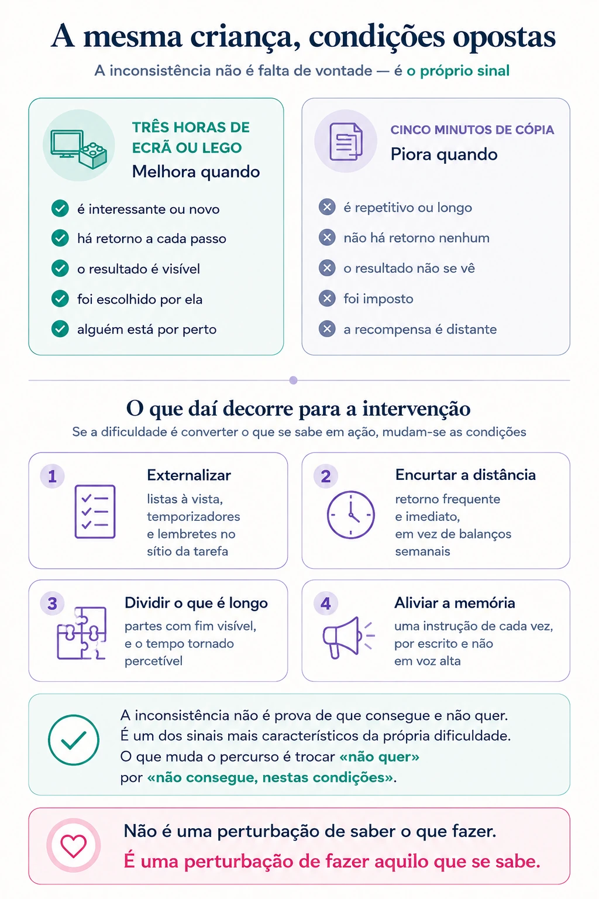

«Ele consegue quando quer»
É a frase que mais se ouve sobre crianças com perturbação de hiperatividade e défice de atenção. E é verdadeira — o que a torna tão difícil de desmontar, e tão cara para quem a ouve todos os dias.
A situação
Passa três horas a montar um cenário de Lego com uma paciência de relojoeiro. No dia seguinte, não consegue estar cinco minutos a copiar uma frase do quadro.
Sabe de cor as regras da casa — recita-as sem hesitar quando lhe perguntam. E às cinco da tarde faz exatamente o contrário do que acabou de dizer.
Desta inconsistência, os adultos à volta tiram quase sempre a mesma conclusão: se consegue às vezes, é porque consegue sempre; se não faz, é porque não quer. É uma inferência lógica, e está errada. Mas é a partir dela que se organizam anos de insistência, castigos, sermões e desapontamento — de parte a parte.
O que se sabe
Não é uma dificuldade em saber. É uma dificuldade em fazer.
A formulação mais útil da investigação nesta área é também a mais simples de enunciar: a PHDA não é uma perturbação de saber o que fazer, é uma perturbação de fazer aquilo que se sabe.
Isto muda tudo. Uma criança com PHDA sabe, tão bem ou melhor do que as outras, que devia começar o trabalho, arrumar a mochila, esperar pela vez. Ouviu-o mil vezes. O que está comprometido não é o conhecimento da regra — é o sistema que converte o que se sabe em ação, no momento certo, sem que ninguém esteja ao lado a lembrar.
Esse sistema tem nome: funções executivas. É o conjunto de processos que permite travar o impulso, manter uma instrução na cabeça enquanto se executa, planear, gerir o tempo, sustentar o esforço numa tarefa aborrecida e regular a emoção quando ela sobe. É aqui que está o problema — não na quantidade de atenção disponível.
Daí a consequência prática mais importante deste texto: ensinar mais não resolve, porque não é falta de ensino. Explicar pela milésima vez a importância de ser organizado tem exatamente o efeito que as novecentas e noventa e nove vezes anteriores tiveram.

Porque é que a inconsistência confunde tanto
O desempenho de uma criança com PHDA varia enormemente conforme as condições. Melhora quando a tarefa é nova, interessante ou intensa; quando há alguém ao lado; quando a consequência é imediata. Piora quando é repetitiva, longa, sem retorno visível, e quando é preciso esperar pela recompensa.
Ou seja: as três horas de Lego e os cinco minutos de cópia não são contraditórios. São a mesma dificuldade a manifestar-se em condições opostas. O Lego fornece de fora aquilo que a criança não consegue gerar de dentro — interesse contínuo, retorno imediato, resultado visível a cada passo. A cópia não fornece nada disso.
A inconsistência não é prova de que a criança consegue e não quer. É um dos sinais mais característicos da própria dificuldade.
O tempo funciona de outra maneira
Uma das alterações menos visíveis e mais incapacitantes é a relação com o tempo. Estimar quanto demora uma tarefa, sentir o tempo a passar, ligar o que se faz agora ao que acontece daqui a uma semana — tudo isto é substancialmente mais difícil.
É por isso que os prazos longos falham, que os trabalhos de projeto aparecem na véspera, e que consequências futuras — «se não estudares, vais reprovar em junho» — praticamente não influenciam o comportamento presente. Junho, para este cérebro, é quase uma abstração.
Também é por isso que os sistemas de recompensa semanal costumam desiludir, enquanto os de retorno frequente funcionam melhor: o que é imediato pesa, o que é distante desaparece.
A emoção também se desregula
Não consta dos critérios de diagnóstico, mas é das dimensões que mais interfere na vida familiar: a dificuldade em travar a reação emocional. A frustração aparece depressa e intensa, a alegria também, e a passagem de uma à outra é rápida.
Isto é frequentemente lido como imaturidade ou como má formação do carácter. É a mesma dificuldade de inibição a aplicar-se às emoções em vez de se aplicar aos movimentos ou às palavras.
O custo de se ler como preguiça
Esta é a parte que mais importa, e a que mais depressa se resolve.
Uma criança que ouve durante anos que é preguiçosa, desinteressada ou mal-educada acaba por acreditar. Constrói uma explicação sobre si própria — «sou burro», «sou mau», «não presto para isto» — que passa a organizar a forma como enfrenta qualquer dificuldade nova. E a partir daí desiste antes de tentar, o que confirma a teoria a toda a gente.
Grande parte do sofrimento associado à PHDA não vem dos sintomas em si. Vem do que se construiu à volta deles: a imagem de si próprio, a relação desgastada com os pais, a expectativa de falhar.
Mudar a leitura — de falha de carácter para dificuldade de funcionamento — não é uma delicadeza nem uma desculpa. É a intervenção que mais altera o percurso, e a única que não custa dinheiro nenhum.
O que a evidência diz que ajuda
Se o problema é converter conhecimento em ação, a intervenção tem de acontecer no momento e no local em que a ação falha — não em conversas sobre o assunto noutro momento. Daí decorrem os princípios com melhor apoio empírico:
- Externalizar o que não é gerado internamente — listas visíveis, temporizadores, quadros, lembretes no ponto onde a tarefa acontece. Não são muletas: são próteses para uma função que está comprometida.
- Encurtar a distância entre a ação e o retorno — retorno frequente e imediato, em vez de balanços semanais.
- Dividir o que é longo em partes com fim visível, e tornar o tempo percetível — um temporizador à vista faz mais do que qualquer aviso.
- Reduzir a exigência de memória de trabalho — uma instrução de cada vez, por escrito, em vez de três seguidas ditas em voz alta.
- Trabalhar com os adultos, e não apenas com a criança. Para as idades mais baixas, os programas estruturados de treino parental são a intervenção de primeira linha nas principais orientações internacionais — antes de qualquer medicação.
- Alinhar casa e escola. Uma estratégia aplicada só num contexto tem efeito só nesse contexto.
A partir da idade escolar, as orientações internacionais recomendam habitualmente uma abordagem combinada, em que a medicação — quando indicada, e essa é uma decisão médica — se articula com a intervenção comportamental e com as adaptações escolares. Nenhuma destas componentes substitui as outras: a medicação pode tornar disponível a atenção necessária para aprender uma estratégia, mas não ensina a estratégia.
O que fazer
Substituir «não quer» por «não consegue, nestas condições». É uma mudança de linguagem que altera o que se faz a seguir. Se não quer, insiste-se. Se não consegue nestas condições, mudam-se as condições.
Intervir no momento, não depois. A conversa ao jantar sobre a mochila mal arrumada tem pouco efeito. Estar presente no momento em que a mochila se arruma tem muito.
Uma instrução de cada vez. «Veste o casaco» — e só quando estiver vestido, «calça os sapatos». Três instruções seguidas são, na prática, uma instrução e duas que se perderam.
Tornar o tempo visível. Um temporizador à vista, ampulheta ou relógio de cozinha, transforma uma abstração em algo percetível. Funciona melhor do que avisar de dez em dez minutos.
Reconhecer o esforço no momento em que acontece. Não no fim da semana. E reconhecer a tentativa, não apenas o resultado — porque é a tentativa que se pretende que se repita.
Escolher as batalhas. Uma criança com PHDA ouve, em média, muito mais correções por dia do que as outras. Reduzir o número de exigências simultâneas, concentrando o esforço em duas ou três, produz mais resultado do que corrigir tudo.
Proteger o que corre bem. A atividade em que a criança é competente — desporto, música, o que for — não é um extra dispensável quando as notas descem. É frequentemente a única área onde ela se experimenta como capaz, e é sobre isso que se reconstrói o resto.
Cuidar de quem cuida. O desgaste dos pais é parte do quadro, não uma fraqueza pessoal. Um adulto esgotado responde pior — e responder pior alimenta o ciclo.
Quando procurar ajuda
Nem toda a criança irrequieta ou distraída tem PHDA. Muitos comportamentos são próprios da idade, e outros explicam-se por sono insuficiente, ansiedade, dificuldades de aprendizagem ou exigências desajustadas. Vale a pena avaliar quando:
- As dificuldades aparecem em mais do que um contexto — casa, escola, atividades — e não apenas num deles.
- Mantêm-se há vários meses, e não melhoram com os ajustes já feitos.
- Existe uma diferença acentuada entre o esforço que a criança faz e os resultados que obtém.
- Há sinais de sofrimento: desânimo em relação a si própria, recusa em ir à escola, queixas físicas matinais, isolamento dos pares.
- A relação com os adultos se organizou à volta do conflito.
- Há história familiar de dificuldades semelhantes.
Uma avaliação não serve para colar um rótulo. Serve para perceber o que está a acontecer, o que não está, e o que ajuda esta criança em concreto — e, com frequência, a conclusão é tranquilizadora.
PHDA — o essencial em duas páginas
O que é e o que não é, porque varia tanto de dia para dia, o que ajuda em casa e na sala de aula, e o que se diz à criança. Pensado para distribuir em sessões e para partilhar com a escola.
Este texto tem fins informativos e não substitui avaliação nem acompanhamento profissional. Cada situação exige uma leitura própria.
Referências
- American Psychiatric Association. (2022). Diagnostic and statistical manual of mental disorders (5.ª ed., texto revisto). https://doi.org/10.1176/appi.books.9780890425787
- Barkley, R. A. (1997). Behavioral inhibition, sustained attention, and executive functions: Constructing a unifying theory of ADHD. Psychological Bulletin, 121(1), 65–94. https://doi.org/10.1037/0033-2909.121.1.65
- National Institute for Health and Care Excellence. (2018). Attention deficit hyperactivity disorder: Diagnosis and management (NICE Guideline N.º NG87). https://www.nice.org.uk/guidance/ng87
- Wolraich, M. L., Hagan, J. F., Allan, C., Chan, E., Davison, D., Earls, M., Evans, S. W., Flinn, S. K., Froehlich, T., Frost, J., Holbrook, J. R., Lehmann, C. U., Lessin, H. R., Okechukwu, K., Pierce, K. L., Winner, J. D., & Zurhellen, W. (2019). Clinical practice guideline for the diagnosis, evaluation, and treatment of attention-deficit/hyperactivity disorder in children and adolescents. Pediatrics, 144(4), e20192528. https://doi.org/10.1542/peds.2019-2528